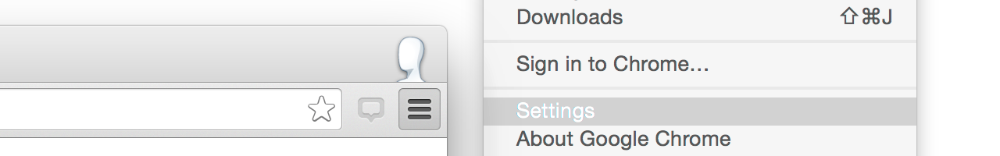
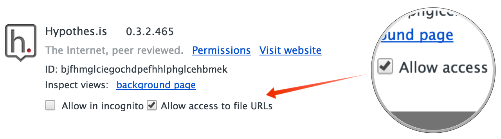

We’re sorry, Hypothesis couldn’t open that file…
If it’s a local PDF document that you’ve opened from your computer you’ll need to change your settings to allow us to access these files.
You can do this from the extensions menu, using the following steps…
- Step One: Open the Extensions Settings page via Window > Extensions Chrome Menu Icon > Settings > Extensions Tools > Extensions 
- Step Two: Check the “Allow access to file URLs” checkbox under the Hypothesis extension. 
We’re sorry, Hypothesis couldn’t open that file…
This extension can’t be used on local HTML documents at the moment.
We’re sorry, Hypothesis doesn’t work on this page…
This extension can only be used on pages served over HTTP/HTTPS and FTP.
If you have a Chrome extension installed that provides a custom viewer for PDFs or other file types, that may prevent them from being annotated with Hypothesis.
We’re sorry, Hypothesis doesn't work on this site yet.
We're sorry, Hypothesis failed to load on this page.
The problem has been reported to our team. If it continues, please contact
support@hypothes.is and provide these
technical details: